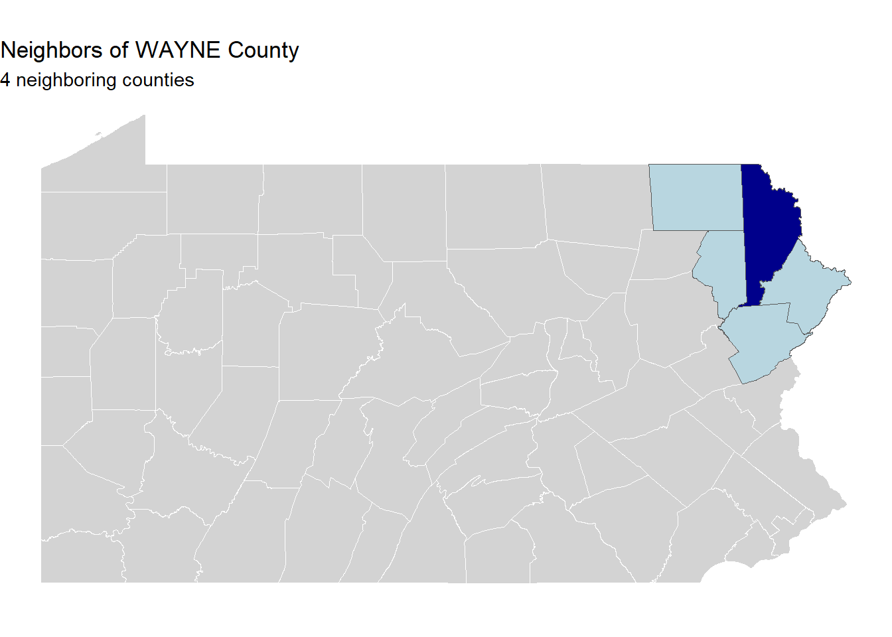

library(sf)library(tidyverse)library(tigris)library(tidycensus)library(scales)library(patchwork)library(here)# Set your Census API key if you haven't alreadycensus_api_key(Sys.getenv("CENSUS_API_KEY"))# Load the data (same as lecture)pa_counties <-st_read(here("data/Pennsylvania_County_Boundaries.shp"))
Reading layer `Pennsylvania_County_Boundaries' from data source
`C:\Users\dalan\Desktop\PPA_CPLN5920\GitHub\CPLN5920_Jalloh_Portfolio_2\in_class_exercises\week_4\data\Pennsylvania_County_Boundaries.shp'
using driver `ESRI Shapefile'
Simple feature collection with 67 features and 19 fields
Geometry type: MULTIPOLYGON
Dimension: XY
Bounding box: xmin: -8963377 ymin: 4825316 xmax: -8314404 ymax: 5201413
Projected CRS: WGS 84 / Pseudo-Mercator
# Step 2: Pick one county (change this to your choice!)my_county <- pa_counties %>%filter(COUNTY_NAM =="WAYNE") # Change "CENTRE" to your county# Step 3: Find neighbors using st_touchesmy_neighbors <- pa_counties %>%st_filter(my_county, .predicate = st_touches)# Step 4: How many neighbors does your county have?cat("Number of neighboring counties:", nrow(my_neighbors), "\n")
Number of neighboring counties: 4
print("Neighbor names:")
[1] "Neighbor names:"
print(my_neighbors$COUNTY_NAM)
[1] "PIKE" "SUSQUEHANNA" "MONROE" "LACKAWANNA"
1.2 Map Your Results
Your Task: Create a map showing your county and its neighbors in different colors.
# Create the mapggplot() +geom_sf(data = pa_counties, fill ="lightgray", color ="white") +geom_sf(data = my_neighbors, fill ="lightblue", alpha =0.7) +geom_sf(data = my_county, fill ="darkblue") +labs(title =paste("Neighbors of", my_county$COUNTY_NAM[1], "County"),subtitle =paste(nrow(my_neighbors), "neighboring counties") ) +theme_void()

1.3 Challenge: Compare with st_intersects
Your Task: What happens if you use st_intersects instead of st_touches? Why is the count different? So basically st_touches counts the surrounding boundaries while st_intersect counts the boundaries
Question: Why is there a difference of 1? What does this tell you about the difference between st_touches and st_intersects? #st_intersect - counts everything that touches and itself #st_touches- just the boundaries
Exercise 2: Hospital Service Areas (15 minutes)
Goal: Practice buffering and measuring accessibility
2.1 Create Hospital Service Areas
Your Task: Create 15-mile (24140 meter) service areas around all hospitals in your county.
# Step 1: Filter hospitals in your county# First do a spatial join to assign counties to hospitalshospitals_with_county <- hospitals %>%st_join(pa_counties %>%select(COUNTY_NAM))# Filter for your county's hospitalsmy_county_hospitals <- hospitals_with_county %>%filter(COUNTY_NAM =="CENTRE") # Change to match your countycat("Number of hospitals in county:", nrow(my_county_hospitals), "\n")
Number of hospitals in county: 3
# Step 2: Project to accurate CRS for bufferingmy_county_hospitals_proj <- my_county_hospitals %>%st_transform(3365) # Pennsylvania State Plane South# Step 3: Create 15-mile buffers (24140 meters = 15 miles)hospital_service_areas <- my_county_hospitals_proj %>%st_buffer(dist =79200) # 15 miles in feet for PA State Plane# Step 4: Transform back for mappinghospital_service_areas <-st_transform(hospital_service_areas, st_crs(pa_counties))
2.2 Map Service Coverage
Your Task: Create a map showing hospitals and their service areas.
ggplot() +geom_sf(data = my_county, fill ="white", color ="gray") +geom_sf(data = hospital_service_areas, fill ="lightblue", alpha =0.4) +geom_sf(data = my_county_hospitals, color ="red", size =2) +labs(title =paste("Hospital Service Areas in", my_county$COUNTY_NAM[1], "County"),subtitle ="Red points = Hospitals, Blue areas = 15-mile service zones" ) +theme_void()
2.3 Calculate Coverage
Your Task: What percentage of your county is within 15 miles of a hospital?
# Union all service areas into one polygoncombined_service_area <- hospital_service_areas %>%st_union()# Calculate areas (need to be in projected CRS)my_county_proj <-st_transform(my_county, 3365)combined_service_proj <-st_transform(combined_service_area, 3365)# Find intersectioncoverage_area <-st_intersection(my_county_proj, combined_service_proj)# Calculate percentagescounty_area <-as.numeric(st_area(my_county_proj))covered_area <-as.numeric(st_area(coverage_area))coverage_pct <- (covered_area / county_area) *100cat("County area:", round(county_area /1e6, 1), "sq km\n")
Your Task: Create a choropleth map of median income by congressional district.
# Join demographics back to district boundariesdistricts_with_demographics <- districts %>%left_join(district_demographics, by ="OBJECTID")# Create the mapggplot(districts_with_demographics) +geom_sf(aes(fill = median_income), color ="white", size =0.5) +scale_fill_viridis_c(name ="Median\nIncome",labels = dollar,option ="plasma" ) +labs(title ="Median Household Income by Congressional District",subtitle ="Pennsylvania",caption ="Source: ACS 2018-2022" ) +theme_void()
4.4 Challenge: Find Diverse Districts
Your Task: Which districts are the most racially diverse?
# Calculate diversity index (simple version: higher = more diverse)# A perfectly even distribution would be ~33% each for 3 groupsdistrict_demographics <- district_demographics %>%mutate(diversity_score =100-abs(pct_white -33.3) -abs(pct_black -33.3) -abs(pct_hispanic -33.3) ) %>%arrange(desc(diversity_score))# Most diverse districtshead(district_demographics %>%select(MSLINK, pct_white, pct_black, pct_hispanic, diversity_score), 5)
Your Task: Calculate county areas using different coordinate systems and compare.
# Calculate areas in different CRSarea_comparison <- pa_counties %>%# Geographic (WGS84) - WRONG for areas!st_transform(4326) %>%mutate(area_geographic =as.numeric(st_area(.))) %>%# PA State Plane South - Good for PAst_transform(3365) %>%mutate(area_state_plane =as.numeric(st_area(.))) %>%# Albers Equal Area - Good for areasst_transform(5070) %>%mutate(area_albers =as.numeric(st_area(.))) %>%st_drop_geometry() %>%select(COUNTY_NAM, starts_with("area_")) %>%mutate(# Calculate errors compared to Albers (most accurate for area)error_geographic_pct =abs(area_geographic - area_albers) / area_albers *100,error_state_plane_pct =abs(area_state_plane - area_albers) / area_state_plane *100 )# Show counties with biggest errorsarea_comparison %>%arrange(desc(error_geographic_pct)) %>%select(COUNTY_NAM, error_geographic_pct, error_state_plane_pct) %>%head(10)
Your Task: Map which counties have the biggest area calculation errors.
# Join error data back to countiescounties_with_errors <- pa_counties %>%left_join( area_comparison %>%select(COUNTY_NAM, error_geographic_pct),by ="COUNTY_NAM" )# Map the errorggplot(counties_with_errors) +geom_sf(aes(fill = error_geographic_pct), color ="white") +scale_fill_viridis_c(name ="Area\nError %",option ="magma" ) +labs(title ="Area Calculation Errors by County",subtitle ="Using geographic coordinates (WGS84) instead of projected CRS" ) +theme_void()
Question: Which counties have the largest errors? Why might this be?
Bonus Challenge: Combined Analysis (If Time Permits)
Goal: Combine multiple operations for a complex policy question
Research Question
Which Pennsylvania counties have the highest proportion of vulnerable populations (elderly + low-income) living far from hospitals?
Your Task: Combine what you’ve learned to identify vulnerable, underserved communities.
Steps: 1. Get demographic (elderly and income) data for census tracts 2. Identify vulnerable tracts (low income AND high elderly population) 3. Calculate distance to nearest hospital 4. Check which ones are more than 15 miles from a hospital 5. Aggregate to county level 6. Create comprehensive map 7. Create a summary table
# Your code here!
Reflection Questions
After completing these exercises, reflect on:
When did you need to transform CRS? Why was this necessary?
What’s the difference between st_filter() and st_intersection()? When would you use each?
How does the choice of predicate (st_touches, st_intersects, st_within) change your results?
Summary of Key Functions Used
Function
Purpose
Example Use
st_filter()
Select features by spatial relationship
Find neighboring counties
st_buffer()
Create zones around features
Hospital service areas
st_intersects()
Test spatial overlap
Check access to services
st_disjoint()
Test spatial separation
Find rural areas
st_join()
Join by location
Add county info to tracts
st_union()
Combine geometries
Merge overlapping buffers
st_intersection()
Clip geometries
Calculate overlap areas
st_transform()
Change CRS
Accurate distance/area calculations
st_area()
Calculate areas
County sizes, coverage
st_distance()
Calculate distances
Distance to facilities
Important Reminder: Always check and standardize CRS when working with spatial data from multiple sources!